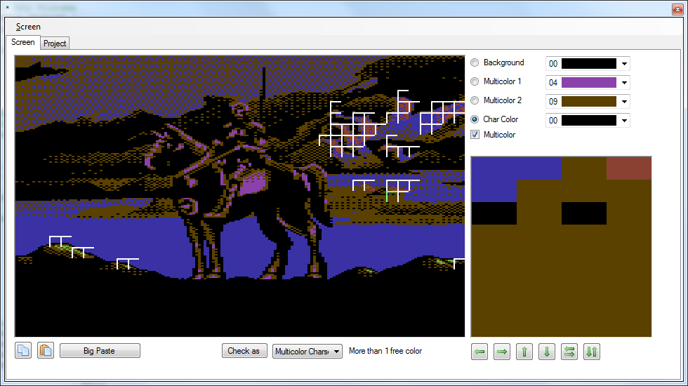

The graphic screen editor supports converting an image of 320x200 pixels to bitmap or charset data. Currently only multi color is supported.

Checking Screen
The image will be checked with the selected multi color colors whether it can be displayed via "Hires Charset", "Multicolor Charset", "Hires Bitmap" or "Multicolor Bitmap".
If the check for any block fails the block is marked. Clicking on the block will show the cause of the failure.
Editing Screen
The screen can only be edited block wise in the view in the lower right corner.
On the project pane several import/export functions are available.
 Export image data as
Export image data as
Choose between different options.
The export is only enabled once a check has been successfully done.
Import from image
Imports a graphic file, supports bmp, png, gif.
Import from file
Currently only supports binary Koala Painter files which are saved at $6000.